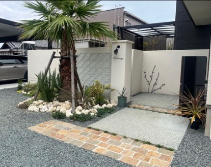
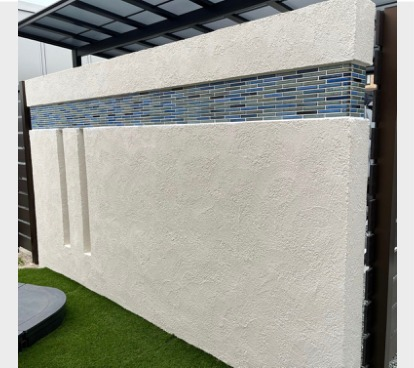
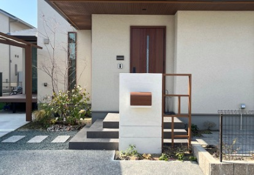
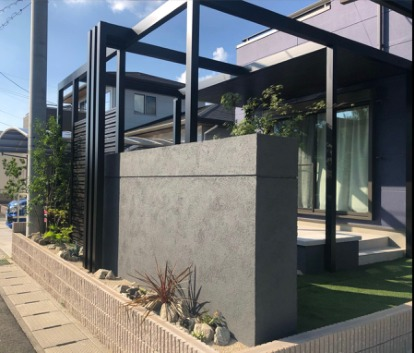
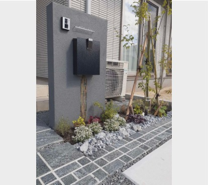
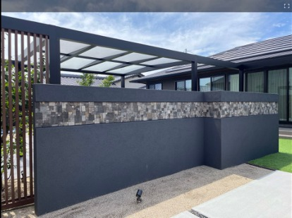
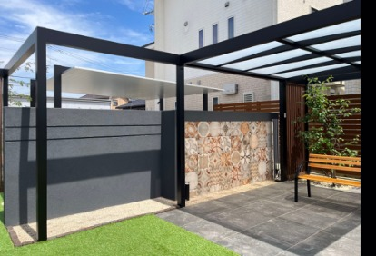
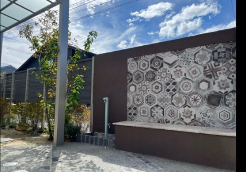
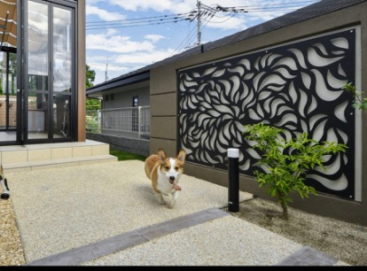

‹ SELECT ITEM（壁材）に戻る
JOLIPATE COLOR GUIDE
ジョリパット おすすめカラー10選
アイカ工業「ジョリパット」には180色以上ものカラーバリエーションがあります。その中から、グランド工房がおすすめする「白系・黒系・茶系」それぞれの推奨10色と、実際の施工事例をご紹介します。
白系
T1000ホワイト色
T1702ウォームホワイト色
T1020レッドクリーム色
T1030イエロークリーム色
黒系
T3001ライトグレー色
T5001グレー色
T6013ダークグレー色
JP-100BKブラック色
茶系
T6010ライトブラウン色
T6404ダークブラウン色
色選びのポイント
白系はベース色として。建物が白や黒のモノトーンなら「T1000」、ベージュやブラウンなら「T1702」のように、建物の色味に合わせると統一感が出て美しい空間になります。
黒系はインパクトのある空間に。汚れが目立ちにくいのもメリットです。建物より明るくすればさわやかに、暗くすればどっしり重厚な空間になります。
茶系は木目やレンガと相性がよく、おしゃれな空間になります。花壇の仕上げやウォールの目地使いにもおすすめです。
推奨カラーはあくまで一例です。ジョリパットには180色以上のバリエーションがありますので、空間に似合う色を自由に選んでいただけます。
白系はベース色として。建物が白や黒のモノトーンなら「T1000」、ベージュやブラウンなら「T1702」のように、建物の色味に合わせると統一感が出て美しい空間になります。
黒系はインパクトのある空間に。汚れが目立ちにくいのもメリットです。建物より明るくすればさわやかに、暗くすればどっしり重厚な空間になります。
茶系は木目やレンガと相性がよく、おしゃれな空間になります。花壇の仕上げやウォールの目地使いにもおすすめです。
推奨カラーはあくまで一例です。ジョリパットには180色以上のバリエーションがありますので、空間に似合う色を自由に選んでいただけます。
施工事例
T1702ウォームホワイト色



T6013ダークグレー色


JP-100BKブラック色


T6010ライトブラウン色

